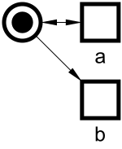

Table of Contents
ProFlo – a language for specifying control flows of processes
ProFlo expressions [1][2] can be used for writing behavioural specifications which can be translated to Petri nets or STGs. In some situations this may be faster than drawing a Petri net or STG in the visual editor. Moreover, there are situations when control flow expressions are straightforward to write but the equivalent Petri net is difficult to design manually (e.g. see Example 3 below).
Examples
Example 1: Specification of an inverter with input in and output out. It is assumed that the intial state of the signals is in=0, out=1, and that the environment is well-behaved, i.e. does not change the value of the input until the output changes:
{ in+; out-; in1+; out+ }
Here the interpretation of actions (like in+) is as in STGs, operator {…} denotes iteration, i.e. the behavior in braces is repeated, and operator ; denotes sequential composition, i.e. the four actions inside {…} are executed sequentially, one after another.
The tool can automatically generate an STG from this expression:
- open Workcraft and create a new Signal Transition Graph (STG) model;
- click the Conversion→Translate ProFlo expression… menu item;
- copy and paste the above expression to the text box in the Control Flow Logic Translator dialog and click OK .

Note that the above expression does not specify the types of signals, so the automatic translator uses the current types for the signals already existing in the STG model, and makes the new signals internal, so one may have to amend the signal types in the generated STG manually. The layout can also be improved manually (though we hope the tool will eventually generate better layout taking the syntax structure of the expression into account).
The sequential composition operator ; can be omitted:
{ in+ out- in- out+ }
Furthermore, spaces, tabs, new lines and comments can be arbitrarily added or removed (as long as adjacent identifiers are not glued together into one identifier), e.g. the following expressions are equivalent to the initial specification:
{in+out-in-out+}
// this is a specification of an inverter with input in and output out,
// augmented with long-winded hair-splitting comments
{ // begin iteration - the following behaviour is repeated 0 or more times:
in+ // the environment is allowed to switch in from 0 to 1
out+ // in response, the circuit must switch out from 1 to 0
in- // only after out+ has completed, the environment is allowed to switch in from 1 to 0
out- // in response, the circuit must switch out from 0 to 1
} // end iteration
Example 2: Specification of a C-element with inputs in1 and in2 and output out:
{ (in1+ | in2+); out+; (in1- | in2-); out- }
Here, operator | is used to express the concurrency between inputs, and parentheses are used to override the default precedence of operators. The tool generates the following STG:

Again, the signal types in this STG need to be amended manually.
Example 3: Choice between 10 pairs of concurrent events:
(a0 | b0) # (a1 | b1) # (a2 | b2) # (a3 | b3) # (a4 | b4) # (a5 | b5) # (a6 | b6) # (a7 | b7) # (a8 | b8) # (a9 | b9)
Here, operator # is used to express choices between pairs of concurrent events.
The resulting Petri net contains 20 transitions a0,…,a9,b0,…,b9 and several synthesised places to enforce the choices. Note that manually designing such a Petri net (if `silent' transitions are disallowed) would be very difficult. An optimal solution has six places, e.g.:
The problem of synthesising a Petri net with minimum number of places is computationally expensive to solve exactly (it is in NP and may be NP-complete [2]), so the current implementation of the exact algorithm takes too long to complete. This can be improved, e.g. by using a SAT solver. A fast heuristic method yields nine places.
Syntax
Comments
C++-style comments are supported:
- from // to the end of the line
- enclosed in /*…*/ Note: This style of comments is not supported yet.
Actions (identifiers)
For Petri net models, the action names are built of English letters (case sensitive), digits, and symbols _$@:. not starting with . or a digit. Workcraft uses . symbol as the hierarchy separator (and it is not supported by the translator yet). Moreover, Workcraft does not support symbols $@: in the identifiers.
For STG models, the action names are as for Petri net models, but can optionally be postfixed with the signal edge, i.e. one of +-~ symbols.
The same action can occur multiple times within an expression – different transitions with the same label will be created in such a case.
Operators
The operators are as follows (A and B are arbitrary expressions):
- Sequential composition
A ; Bor justA B - Choice
A # B - Concurrency (a.k.a Interleaving)
A | B - Iteration
{ A }
There are a few pitfalls when using the iteration, see below. At the moment, iteration is not properly supported, as incorrect Petri nets and STGs can be generated. For now, the only reasonably safe way of using iteration is to have a single outer iteration, i.e. when the whole expression has the form {BODY} where BODY does not use iteration and has some sequentiallity in each path.
The binary operators ;, #, and | are given in the order of decreasing precedences, and parentheses (…) can be used to override the default precedence. All binary operators are associative; moreover, # and | are commutative.
Translation
The translation of expressions (without iteration operator) to Petri nets is described in [1][2].
The translation creates a Petri net or STG transition for each atomic action in the expression. (If there are several occurrences of the same atomic action in the expression, a separate transition is created for each occurrence.) In particular, no `silent' transitions (a.k.a. dummy transitions or ε-transitions) are created by the translation.
Then a set of places is synthesised to enforce the necessary sequencing and choice.
Pitfalls with the iteration operator
The translation of iteration is currently under development, and has a number of issues, including both fundamental theoretical ones and implementation problems. At the moment, many uses of iteration result in incorrect Petri nets and STGs being generated. For now, the only reasonably safe way of using iteration is to have a single outermost iteration, i.e. when the whole expression has the form {BODY} where BODY does not use iteration and has some sequentiallity in each path through it.
There are a number of known pitfalls associated with the iteration operator. They can be solved by prefixing and/or postfixing the iteration with extra actions, i.e. making sure that iteration {A} is used in a context like …;{A};…, i.e. surrounded with ;.
Besides, even if these pitfalls are avoided, the current implementation often generates incorrect Petri nets or STGs.
Hopefully, one day the tool will be fixed and will analyse the syntax to detect these pitfalls and provide diagnostics.
Pitfall 1: Bad interaction with choice or outer iteration
Consider the Petri net for {a}#b:

Unfortunately, this Petri net has illegal traces like a b. Intuitively, the Petri net lacks a separate marking indicating that the decision has been made to execute the branch of the choice containing the iteration – in the above Petri net this marking is confused with the initial marking. If `silent' transitions were allowed, one could model this with the following Petri net:

Note that a similar problem can occur when iteration is nested within another iteration – the initial state of the outer iteration is effectively a choice between executing its body and skipping it, e.g. the Petri net for {{a};b};c allows the illegal trace a c (without b).
To work around problem, one should separate iteration from choice (or from outer iteration) with some sequencing, e.g. the following expressions avoid the problem: (s;{a})#b, {s;{a};b};c.
A similar problem occurs when the end of the iteration body interacts with the merge point of a choice (or the end of the outer iteration's body). For example, consider ((s;{a})#b);c. The resulting Petri net is as follows:
Note that it allows an illegal trace b a. Similarly, the Petri net for {s;{a}} allows the illegal trace a (without s).
Pitfall 2: Concurrency in the body
Another pitfall is that concurrency in the body of iteration can result in unsafe Petri net. For example, consider the Petri net for {a|b}:
Note that firing either a or b transition results in an unsafe (though 2-bounded) marking. Intuitively, the reason is that traces like a b b are possible, where the transition corresponding to b can fire twice (but not more) in a row – to model this without `silent' transitions one needs two tokens on some place. As many verification and synthesis tools in Workcraft can work only with safe Petri nets or STGs, constructions like this should be avoided.
To work around this problem, one needs some sequencing in the body of the iteration, e.g. the Petri net for {(a|b);(c|d)} is safe.